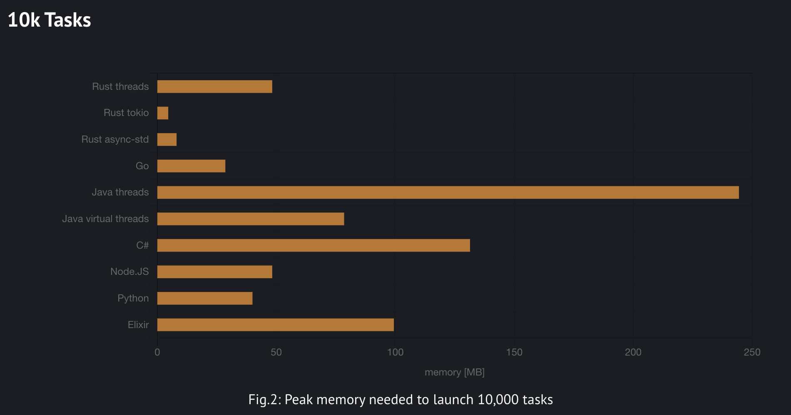

🦀 Rüstzeit
Asynchronous and Concurrent Optimisation in Python and Rust
Jamie Coombes
PyCon DE & PyData 2025
PyCon: Rust
23. - 25. April 2025
Darmstadtium, Darmstadt, Deutschland
- Main Talk Question
Python/Rust Interop and David Hewitt's free-threaded python atop Tokio question.
- Asynchronous Concurrency
Exploring async foundations through Rayon and Tokio in Rust, compared with Python's approaches.
- Case Study: A million monkeys at a million typewriters
Parallelising and benchmarking a genetic algorithm for evolving text into Shakespeare quotes.
- Conclusion
Exploring the future of Python/Rust Interop and the potential for free-threaded Python atop Tokio.
Python/Rust Interop Growth in 2025

- Rust language as preferred developer-experience for writing native python extensions.
- RIIR - Rewrite It In Rust - for 10x-80x* performance improvements
- PyO3 is the most popular Rust library for Python interop.
- Maturin is the most popular tool for building and distributing Rust Python packages. *performance benchmarking is hard, see flame graphs later
Rust/Python Interop Growth in 2025
The Main Talk Questions
"Do we want to expose the tokio event loop as the basis for a Python async runtime?"
— David Hewitt @davidhewittdev - Rust Nation UK 2025
"How will free-threaded Python lead to better parallel code?"
- me, today, right now
Free-threaded Python + Tokio = ??

Free Threading in Python
Python 3.13 shipped an
- Expected to become the default in a few years
- PyO3 supports 3.13t fully
- Rust's Send + Sync traits make it straightforward to reason about threading issues
A multi-threaded tokio-based Python runtime could be...
Memory Efficient (and hence scalable)
Image source: Pkolaczk's memory-consumption-of-async
...well past os.cpu_count() threads

Image source: Pkolaczk's memory-consumption-of-async
Typed to prevent data races
- Rust's ownership model guarantees thread safety at compile time
- Rich ecosystem of threading primitives (std::sync, parking_lot, crossbeam)
- Threading can complement or replace async patterns
Note: While Rust prevents data races, it can't prevent all concurrency bugs (deadlocks, algorithmic issues)
Faster
so you add :rocket: to your project README

okay, but I really like python
what are the multi-threaded async alternatives?
well there is threado...
but threado is deado

maybe ask @dabeaz to bring it back for 3.14t or 3.15t?
or just do dabeaz's summer of rust and create a tokio-based python runtime?
How do rust and python think about concurrency and parallelism?
Section 2: Foundations of Async Programming
The evolution of concurrency models in Python and Rust
Python's Async Evolution
pre-generators] --> B[Twisted
with generators] B --> C[asyncio] C --> D[Trio] D --> E[anyio]
A journey from explicit to implicit concurrency control
↓ Press down for examples
asyncio (Python 3.5+)
import asyncio
async def get_data():
await asyncio.sleep(1) # Simulate async operation
return "Result"
async def main():
try:
result1 = await get_data()
result2 = await process_data(result1)
print(f"Final result: {result2}")
except Exception as e:
print(f"Error: {e}")
asyncio.run(main())Fully implicit coroutines with async/await syntax
Trio (Structured Concurrency)
import trio
async def connect(addr):
# ... connection attempt logic
return socket
async def main():
async with trio.open_nursery() as nursery:
for addr in addresses:
nursery.start_soon(connect, addr)
# We only get here when ALL tasks are done
print("All connections complete")Structured concurrency with explicit task relationships
anyio: Unifying asyncio and Trio
import anyio
async def main():
async with anyio.create_task_group() as tg:
for addr in addresses:
tg.start_soon(connect_to, addr)
# Works on both asyncio and trio backends
# Run with asyncio backend
anyio.run(main, backend="asyncio")
# Or with trio backend
anyio.run(main, backend="trio")2.4M monthly downloads, powers httpx, FastAPI, Pydantic AI
Memory Safety vs Liveness
Memory Safety
- Prevents undefined behavior from invalid memory access
- Avoids segmentation faults, buffer overflows, use-after-free
- Focus of Rust's borrow checker
Liveness
- Ensures program makes progress
- Prevents deadlocks, livelocks, infinite loops
- Focus of structured concurrency
Languages typically prioritize one over the other
How Memory Safety is Achieved
| Python | Rust |
|---|---|
| Automatic memory management via garbage collection | Compile-time ownership and lifetime checking |
| Object reference counting + cycle detection | No garbage collector for most code |
| Runtime checks (IndexError, KeyError, etc.) | Static analysis prevents most errors at compile time |
| No direct pointer manipulation in pure Python | Safe abstractions around pointers (references, Box, etc.) |
| C extensions can introduce memory safety issues | Unsafe blocks explicitly mark potential issues |
Structured Concurrency: Solving Liveness
Trio's Model

"All tasks are equal"
Key Principles
- Tasks tied to lexical scopes
- Automatic cancellation on scope exit
- Error propagation to parent
- Child tasks cannot outlive parent scope
↓ Press down for liveness guarantee examples
The Infinite Loop Problem
Problem in Tokio
// This will never complete if the socket
// continues to receive data
let results = tokio::join!(
infinite_socket_reader(&mut socket),
some_other_task()
);
// This line is never reachedSolution in Trio
async with trio.move_on_after(30):
async with trio.open_nursery() as nursery:
nursery.start_soon(infinite_socket_reader)
nursery.start_soon(some_other_task)
# Control reaches here after at most 30 secondsRust's Thread Safety Guarantees
Send Trait
- Types that can be transferred between threads
- Example: Vec<i32> is Send
- Counter-example: Rc<T> is not Send
Sync Trait
- Types that can be shared between threads
- Example: Mutex<T> is Sync
- Counter-example: RefCell<T> is not Sync
Parallelism Approaches
Python
- concurrent.futures.ProcessPoolExecutor
- Multiprocessing module
- Future: InterpreterPoolExecutor with free-threaded Python
- Limited by GIL in threaded code
Rust
- std::thread for raw threads
- Rayon for data parallelism
- Tokio for task concurrency + thread pools
- No GIL, true parallelism
Rayon: Data Parallelism in Rust
use rayon::prelude::*;
fn main() {
let data: Vec = (0..1000).collect();
// Sequential
let sum1: u32 = data.iter().map(|&x| expensive_calculation(x)).sum();
// Parallel - just change iter() to par_iter()
let sum2: u32 = data.par_iter().map(|&x| expensive_calculation(x)).sum();
assert_eq!(sum1, sum2);
} Drop-in parallelism with minimal code changes
Key Insights
- Memory Safety vs. Liveness: Languages typically excel at one
- Structured Concurrency: Provides liveness guarantees Python developers expect
- Thread Safety: Rust's type system makes concurrency bugs compile errors
- Developer Experience: Tradeoffs between simplicity and control
- Free-threaded Python on Tokio: Would need to bridge these different models
Challenges for Free-threaded Python atop Tokio
- Preserving Trio-style structured concurrency guarantees
- Adding cancellation propagation to Tokio's model
- Maintaining Python's ergonomics with Rust's performance
- Ensuring thread-safety without complex annotations
- Addressing the infinite loop/liveness problem
The ideal system would combine Python's structured concurrency model with Rust's efficient threading
Case Study: Genetic Algorithm
"A Million Monkeys at a Million Typewriters"
Evolving random text into Shakespeare quotes
"Brevity is the soul of wit"
(Also the soul of optimization)
Key Components of Our Genetic Algorithm
- Population: Collection of candidate solutions (text strings)
- Fitness Function: Character-by-character matching with target
- Selection: Tournament selection for choosing parents
- Crossover: Combining parent strings at random split points
- Mutation: Random character changes to maintain diversity
Our goal: Evolve gibberish text into Shakespeare quotes efficiently
Tokio Architecture for the GA
Multi-threaded parallel processing with structured task management
JoinSet: Parallel Fitness Calculation
pub async fn calculate_fitness_parallel(&mut self) -> Vec {
let target = Arc::new(self.target.clone());
let mut join_set = JoinSet::new();
// Split population into chunks for each worker
let chunks: Vec> = self
.population
.chunks(self.population.len() / num_cpus::get().max(1))
.map(|chunk| chunk.to_vec())
.collect();
// Process each chunk in parallel
for chunk in chunks {
let target_clone = Arc::clone(&target);
join_set.spawn(async move {
let mut results = Vec::with_capacity(chunk.len());
for mut individual in chunk {
individual.calculate_fitness(&target_clone);
results.push(individual);
}
results
});
}
// Collect results
let mut all_results = Vec::with_capacity(self.population.len());
while let Some(result) = join_set.join_next().await {
if let Ok(chunk_results) = result {
all_results.extend(chunk_results);
}
}
all_results
} Adaptive chunking ensures efficient distribution across CPU cores
Message Passing for Progress Reporting
// Channel for reporting updates
let (tx, mut rx) = mpsc::channel(100);
// Spawn a separate task for handling I/O
if !benchmark_mode {
let progress_clone = Arc::clone(&progress);
tokio::spawn(async move {
while let Some((generation, fitness)) = rx.recv().await {
let mut progress = progress_clone.lock().await;
progress.push((generation, fitness));
// Print current status
println!("Generation {}: Best fitness {:.4}",
generation, fitness);
}
});
}Decouples computation from I/O to avoid blocking the worker threads
Performance Analysis

- Text Size Impact: Linear scaling with input length
- Thread Count: Near-linear speedup up to CPU core count
- Chunk Size: Optimal at population_size / (2 × num_cpus)
- Memory Usage: ~500 bytes per individual + task overhead
Benchmark Results
- Rust: ~7ms per generation
- Python: ~70ms per generation
- 10x speedup from:
- Zero-cost abstractions
- Efficient parallel execution
- No GIL contention
Key Design Decisions
Taskification Strategy
- Chunk-based vs individual-based tasks
- One task per CPU core minimizes overhead
- Work-stealing naturally balances uneven chunks
- Fixed thread pool matches system CPUs
Data Sharing Approach
- Arc for shared immutable data
- Clone for task-local mutable data
- Channels for progress communication
- Mutex only for visualization data
Case Study Conclusions
- Tokio's JoinSet provides efficient task-based parallelism
- Message passing effectively decouples computation from I/O
- Tournament selection eliminates global synchronization points
- Chunking strategy balances parallelism and overhead
- Benchmark mode enables accurate performance measurement
- Thread safety guaranteed at compile time via Rust's type system
These principles apply broadly to CPU-bound parallel workloads
Broader Implications
- Tokio excels beyond just I/O-bound workloads
- Structured concurrency improves reliability for parallel algorithms
- Message passing reduces synchronization overhead
- Worker thread pools maximize CPU utilization
- Compile-time thread safety eliminates entire class of bugs
A free-threaded Python atop Tokio could bring these benefits to Python
Returning to the Initial Question
"Would Pythonistas benefit from free-threaded Python atop the Tokio runtime?"
My thoughts:
- Potential for substantial performance gains
- Challenges in API design and mental model
- Integration complexity considerations
Sources and Credits
- @graingert and the anyio core contributing team
- Rust for the Polyglot Programmer
- Rust programming language book, rustlings, rust by example
- Tokio glossary
- Arden labs: Fearless Concurrency in Rust series
- Piotr's performance benchmarking
- David Hewitt Rust Nation UK talk
- Evgenii Seliversov: Parallel Programming in Rust techniques
- Rust async book